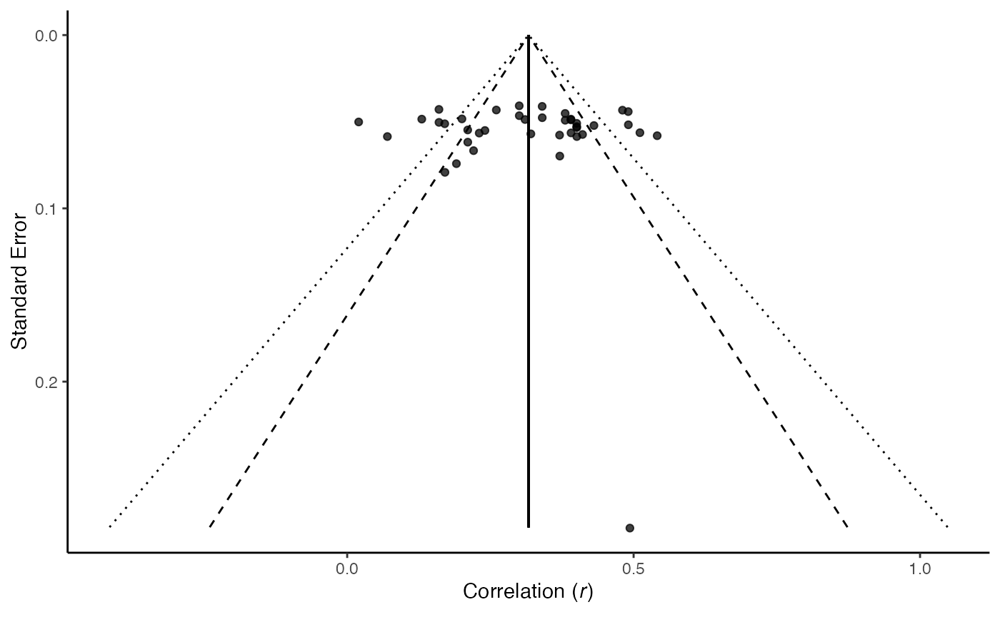

vignettes/workshop.Rmd
workshop.Rmdpsychmeta is a comprehensive and open-source R package for computing psychometric meta-analyses, conducting follow-up analyses of meta-analytic results (e.g., cumulative meta-analyses, leave-one-out meta-analyses, bootstrapped meta-analyses, and meta-regressions [with help from metafor]), simulating data impacted by psychometric artifacts, and much more! This tutorial is meant to introduce you to some of the most critical features of psychmeta and familiarize you with workflows within the package. We’ll start with the basics (installation and data import) and work our way up to the more techncial topics.
psychmeta
Install the official CRAN version of the package:
install.packages("psychmeta")Or install the GitHub verson (with incremental updates between CRAN releases):
devtools::install_github("psychmeta/psychmeta")Load the package library:
library(psychmeta)Recommended packages for data import:
rio (convenient import of many formats; relies on fread() funtion from data.table and can have isues with date variables)readr (many efficient functions for loading delimited datafiles; e.g., CSV)haven (imports and exports SPSS, SAS, and Stata files)readxl (for Excel files)psychmeta requires data to be in a “long” format. This means that each effect size is coded in its own row of a matrix. For example, a long format looks like this:
## Study n rxyi Rating source rxxi ryyi ux
## 1 Abod (2001) 467 0.24 Supervisor 0.85 0.94 0.63
## 2 Allworth & Hesketh (1999) 187 0.24 Supervisor 0.90 0.94 0.63
## 3 Avis (2001) 203 0.24 Supervisor 0.82 0.96 0.63
## 4 Avis et al. (2002) 370 0.12 Supervisor 0.72 0.97 0.63
## 5 Bergman et al. (2008) 148 0.16 Supervisor 0.72 0.90 0.63
## 6 Blickle et al. (2011) 202 -0.04 Supervisor 0.90 0.86 0.63Not all data come in a long format, so data manipulation tools can be helpful to convert it to a long format.
Recommended packages for data manipulation:
dplyr (flexible package for fast, intuitive data manipulation)tidyr (functions to convert between wide and long data)psychmeta can also help with reshaping data!
Sometimes it can be quick to code data in a journal table-like format:
dat_matrix## var_names n mean sd rel X Y Z
## 1 X 100 4 2.4 0.80 1.0 0.3 0.4
## 2 Y 100 5 2.6 0.70 0.3 1.0 0.5
## 3 Z 100 3 2.0 0.85 0.4 0.5 1.0This matrix-style format can be easily converted to the long-format data psychmeta requires with the reshape_mat2dat() function:
reshape_mat2dat(
var_names = "var_names", # Column of variable names
cor_data = c("X", "Y", "Z"), # Names of correlation columns
common_data = "n", # Names of columns shared among relationships
unique_data = c("mean", "sd", "rel"), # Names of columns unique to relationships
data = dat_matrix)## x_name y_name rxyi n mean_x sd_x rel_x mean_y sd_y rel_y
## 1 X Y 0.3 100 4 2.4 0.8 5 2.6 0.70
## 2 X Z 0.4 100 4 2.4 0.8 3 2.0 0.85
## 3 Y Z 0.5 100 5 2.6 0.7 3 2.0 0.85Sometimes it can also be quick to code data with multiple correlations in one row (i.e., a wide format):
dat_wide## sample_id ni rxyi_X_Y rxyi_X_Z rxyi_Y_Z rel_X rel_Y rel_Z
## 1 1 66 -0.29 0.18 0.15 0.95 0.85 0.91
## 2 2 74 -0.16 0.18 0.00 0.93 0.86 0.90
## 3 3 93 -0.34 0.02 0.00 0.97 0.82 0.89This wide format can be easily converted to the long format psychmeta requires:
common_vars <- c("sample_id") # Column names for variables common to all
# relationships
var_names <- c("X", "Y", "Z")
es_design = matrix(NA, 3, 3) # Matrix containing the column names
es_design[lower.tri(es_design)] <- # for the intercorrelations among variables
c("rxyi_X_Y", "rxyi_X_Z", "rxyi_Y_Z") # in the lower triangle of the matrix
rownames(es_design) <-
colnames(es_design) <-
var_names
n_design <- "ni" # Sample size column name or es_design-like
# matrix
other_design <- # Matrix with variable names as row names,
cbind(rel = c("rel_X", # names of long-format variables as column names,
"rel_Y", # and column names of dat_wide as elements
"rel_Z"))
rownames(other_design) <- var_names
reshape_wide2long(common_vars = common_vars,
es_design = es_design,
n_design = n_design,
other_design = other_design,
es_name = "rxyi", # Type of effect size in dat_wide
data = dat_wide)## sample_id n rxyi rel_x rel_y x_name y_name
## 1 1 66 -0.29 0.95 0.85 X Y
## 2 2 74 -0.16 0.93 0.86 X Y
## 3 3 93 -0.34 0.97 0.82 X Y
## 4 1 66 0.18 0.95 0.91 X Z
## 5 2 74 0.18 0.93 0.90 X Z
## 6 3 93 0.02 0.97 0.89 X Z
## 7 1 66 0.15 0.85 0.91 Y Z
## 8 2 74 0.00 0.86 0.90 Y Z
## 9 3 93 0.00 0.82 0.89 Y ZThe convert_es() function can be used to convert a wide variety of statistics to the r or d metric.
convert_es(es = 1, input_es = "d", output_es = "r", n1 = 50, n2 = 50)
convert_es(es = -1.3, input_es = "t", output_es = "r", n1 = 100, n2 = 140)
convert_es(es = 10.3, input_es = "F", output_es = "r", n1 = 100, n2 = 150)
convert_es(es = 1.3, input_es = "chisq", output_es = "r", n1 = 100, n2 = 100)
convert_es(es = .021, input_es = "p.chisq", output_es = "r", n1 = 100, n2 = 100)
convert_es(es = 4.37, input_es = "or", output_es = "r", n1 = 100, n2 = 100)
convert_es(es = 1.47, input_es = "lor", output_es = "r", n1 = 100, n2 = 100)
convert_es(es = .2, input_es = "r", output_es = "d", n1 = 50, n2 = 50)
convert_es(es = -1.3, input_es = "t", output_es = "d", n1 = 100, n2 = 140)
convert_es(es = 10.3, input_es = "F", output_es = "d", n1 = 100, n2 = 150)
convert_es(es = 1.3, input_es = "chisq", output_es = "d", n1 = 100, n2 = 100)
convert_es(es = .021, input_es = "p.chisq", output_es = "d", n1 = 100, n2 = 100)
convert_es(es = 4.37, input_es = "or", output_es = "d", n1 = 100, n2 = 100)
convert_es(es = 1.47, input_es = "lor", output_es = "d", n1 = 100, n2 = 100)To include converted effect sizes in a meta-analysis, merge output of convert_es() into your data frame, at least the the columns for the converted effect sizes (r, d, AUC), sample size (n), effective sample size (n_eff):
convert_es(es = c(.4, .3, .25),
input_es = "r", output_es = "d",
n1 = c(50, 110, 65), n2 = c(50, 70, 65)
)## d values converted from r values
## -----------------------------------------
## d n_effective n n1 n2 var_e
## 1 0.873 100 100 50 50 0.0447
## 2 0.645 180 180 110 70 0.0248
## 3 0.516 130 130 65 65 0.0323Corrections for measurement error and range restriction can be applied automatically within meta-analyses.
Other corrections can be made, but they need to be applied sporadically (i.e., applied to individual effect sizes before including them in a meta-analysis).
correct_r_dich(r = c(.3, .5), px = .5, py = .5, n = 100)
correct_r_split(r = c(.3, .5), pi = .2, n = 100)ma_r() is the general-purpose meta-analysis function for correlationsThe arguments to this function are:
ma_r(
#### Commonly used arguments: ####
# Which data set would you like to use?
data = NULL,
# Specify essential effect-size information.
rxyi, n, n_adj = NULL,
# Differentiate sources of data.
sample_id = NULL, citekey = NULL,
# Specify methodological parameters.
ma_method = "bb", ad_type = "tsa",
correction_method = "auto",
# Specify constructs and measures of constructs.
construct_x = NULL, construct_y = NULL,
measure_x = NULL, measure_y = NULL,
# Weighting method
wt_type = "sample_size",
# Correct for small-sample bias?
correct_bias = TRUE,
# Correct for measurement error?
correct_rxx = TRUE, correct_ryy = TRUE,
# Correct for range restriction?
correct_rr_x = TRUE, correct_rr_y = TRUE,
# Is the range restriction indirect (vs. direct) in nature?
indirect_rr_x = TRUE, indirect_rr_y = TRUE,
# What are your reliability coefficients?
rxx = NULL, ryy = NULL,
# Are your reliability coefficients range restricted?
rxx_restricted = TRUE, ryy_restricted = TRUE,
# What types of reliability estimates are you using?
rxx_type = "alpha", ryy_type = "alpha",
# What are your range-restriction u (SD) ratios?
ux = NULL, uy = NULL,
# Are your u ratios computed from observed (vs. true-score) SDs?
ux_observed = TRUE, uy_observed = TRUE,
# What are your moderators and which ones are categorical?
moderators = NULL, cat_moderators = TRUE,
# What type of moderator analysis do you want (simple vs. hierarchical)?
moderator_type = "simple",
# If correcting for bivariate indirect RR, how do constructs correlate
# with selection mechanisms? (only need to specify the +1 or -1 sign of the relationships)
sign_rxz = 1, sign_ryz = 1,
# Do you have any artifact distributions to include that are not in your database?
supplemental_ads = NULL,
#### Other arguments to know about: ####
# Specify the order in which constructs should be displayed in output.
construct_order = NULL,
# If analyzing multiple relationships, how should each constructs's measurement
# error be handled?
correct_rel = NULL,
# If analyzing multiple relationships, how should each construct's
# range restriction be handled?
correct_rr = NULL,
# If analyzing multiple relationships, which constructs are affected by indirect
# range restriction?
indirect_rr = NULL,
# If analyzing multiple relationships, how does each construct correlate with
# the selection mechanism?
sign_rz = NULL,
# Additional methological parameters can be modified using the "control" argument.
control = control_psychmeta()
)In addition to the arguments used with ma_r() directly, the control argument allows users to modify methological parameters of their analyses and interact with some of the more specialized features of psychmeta’s meta-analysis functions. The control argument in meta-analysis functions accepts the output of the control_psychmeta() function.
control_psychmeta(
# Should the mean or the sample-specific effect sizes be used to estimate error variance?
error_type = c("mean", "sample"),
# What proportion of the distribution of means should be included in confidence intervals?
conf_level = .95,
# What proportion of the residual distribution of observations should be included in credibility intervals?
cred_level = .8,
# How should confidence and credibility intervals be computed? With the t or normal distribution?
conf_method = c("t", "norm"),
cred_method = c("t", "norm"),
# Should weighted variance estimates be computed as unbiased (i.e., multiplied by k / [k-1])?
var_unbiased = TRUE,
# Should overall artifaction distributions be computed for each construct (pairwise_ads == FALSE) or should
# artifact distributions be computed separately for each construct pair (pairwise_ads == TRUE)?
pairwise_ads = FALSE,
# Should artifact distributions be computed by collapsing across moderator
# levels (moderated_ads == FALSE) or should artifact distributions be computed
# separately for each moderator combination (moderated_ads == TRUE)?
moderated_ads = FALSE,
# Should artifact-distribution corrections be computed using artifact distributions
# that have had sampling error removed (residual_ads == TRUE) or should the observed
# distributions be used (residual_ads == TRUE)?
residual_ads = TRUE,
# Should dependent observations (i.e., multiple observations of the same relationship in a single sample) be
# consolidated so that there is just one independent observation per sample?
check_dependence = TRUE,
# If check_dependence is TRUE, how should dependency be resolved? Options are to compute a composite
# effect size (default), compute the average of the effect sizes, or to stop with an error message.
collapse_method = c("composite", "average", "stop"),
# The intercor argument uses the control_intercor() function to control how the intercorrelations
# among variables are handled with collapse_method == "composite"
intercor = control_intercor(),
# Should artifact information be cleaned to resolve discrepancies among values recorded for multiple
# relationsips involving a given construct in a given sample?
clean_artifacts = TRUE,
# Should missing artifact information be imputed? (For use with individual-correction method only)
impute_artifacts = TRUE,
# If impute_artifacts is TRUE, how should imputation be performed? See the documentation for the
# control_psychmeta() function for descriptions of the available options.
impute_method = c("bootstrap_mod", "bootstrap_full", "simulate_mod", "simulate_full",
"wt_mean_mod", "wt_mean_full", "unwt_mean_mod", "unwt_mean_full",
"replace_unity", "stop"),
# What seed value should be set for the imputation process? (This makes the imputation reproducible)
seed = 42,
# Should artifact information from observations not included in meta-analyses be harvested from "data"
# and included in artifact distributions?
use_all_arts = TRUE,
# For meta-analyses of d values, should the proportionality of membership in the unrestricted sample
# be estimated from the range-restricted proportions and the range-restriction correction factor?
estimate_pa = FALSE,
# To what number of decimal places should interactive artifact distributions be rounded prior to use?
# Rounding reduces the computational burden of creating multi-dimensional arrays of artifact information.
decimals = 2,
# Should the "Hunter-Schmidt" override settings be used? When TRUE, this will override settings for:
# - wt_type will set to "sample_size"
# - error_type will set to "mean"
# - correct_bias will set to TRUE
# - conf_method will set to "norm"
# - cred_method will set to "norm"
# - var_unbiased will set to FALSE
# - residual_ads will be set to FALSE
# - use_all_arts will set to FALSE
hs_override = FALSE
)At a minimum, simply specify correlations and sample sizes. You can specify vectors containing correlations, sample sizes, and other input data for each study in three different ways (and any combination of the three):
ma_r(rxyi = data_r_meas_multi$rxyi,
n = data_r_meas_multi$n)data.
ma_r(rxyi = "rxyi", n = "n",
data = data_r_meas_multi)data.
ma_r(rxyi = rxyi, n = n,
data = data_r_meas_multi)Moderator analyses are easy—just identify a column or matrix of moderator information.
ma_r(rxyi = rxyi, n = n,
moderators = moderator,
data = data_r_meas_multi)To use multiple moderators, supply the column names as a string vector.
On top of moderators, psychmeta can also meta-analyze multiple construct relationships in one function call.
ma_r(rxyi = rxyi, n = n,
construct_x = x_name,
construct_y = y_name,
data = data_r_meas_multi)
ma_r(rxyi = rxyi, n = n,
construct_x = x_name,
construct_y = y_name,
moderators = moderator,
data = data_r_meas_multi)psychmeta can automatically make corrections for reliability and range restriction as it computes meta-analyses. To do so, specify vectors of data for each artifact your want to correct. To apply corrections individually to each study, specify ma_method = "ic".
The clean_artifacts and impute_artifacts arguments are used to impute missing artifact data and check for various errors or inconsistencies in the artifacts. You should generally leave these set to TRUE; they are only FALSE here to speed up computations during this tutorial, as our data are clean.
ma_obj <- ma_r(ma_method = "ic",
rxyi = rxyi, n = n,
construct_x = x_name,
construct_y = y_name,
rxx = rxxi,
ryy = ryyi,
moderators = moderator,
clean_artifacts = FALSE,
impute_artifacts = FALSE,
data = data_r_meas_multi)To apply corrections to meta-analysis results overall, rather than to individual studies, specify ma_method = "ad". Artifact distribution methods are useful when you have missing data (they make imputating missing values unnecessary). They can also be used to supplement observed artifacts with values from other sources (reducing artifact sampling error) and for applying corrections to artifact values to yield more accurate meta-analysis results (e.g., Dahlke & Wiernik, 2019b).
psychmeta can apply a variety of artifact correction models. You can specify which method to use with the correction_method argument. The default is “auto,” and psychmeta will choose the best method based on available artifact data and settings for these arguments:
correct_biascorrect_rxx, correct_ryy
correct_rr_x, correct_rr_y
indirect_rr_x, indirect_rr_y
correct_rel, correct_rr, indirect_rr
ma_r(ma_method = "ad",
rxyi = rxyi, n = n,
construct_x = x_name,
construct_y = y_name,
rxx = rxxi,
ryy = ryyi,
correct_rr_x = FALSE,
correct_rr_y = FALSE,
moderators = moderator,
data = data_r_meas_multi)You can also convert a meta-analysis previously calculated using barebones or individual-correction methods to an artifact-distribution meta-analysis:
ma_r_ad(ma_obj, correct_rr_x = FALSE, correct_rr_y = FALSE)Psychometric meta-analysis assumes that each effect size for a particular construct relationship comes from an independent sample. If one sample provides multiple effect sizes for the same relationship, psychmeta can automatically consolidate them as either composites (recommended) or averages.
ma_r() will automatically compute the primary results that should be reported for meta-analyses, including total sample size (N), number of studies (k), average effect sizes (mean_r and mean_rho), observed (sd_r and sd_r_c) and residual (sd_res and sd_rho) standard deviations, and confidence intervals and credibility intervals. These results are sufficient for evaluating average effect sizes, heterogeneity of effects, and precision or uncertainty in the results.
psychmeta also provides a variety of follow-up analyses to supplement the primary meta-analysis results.
sensitivity()
sensitivity() computes several different types of sensitivity analyses for meta-analytic results:
bootstrap (calculate bootstrap confidence intervals on all meta-analysis results)cumulative (calculate cumulative meta-analyses—a form of publication bias analysis)leave1out (compute meta-anlayses leaving out 1 sample at a time—for outlier/influential point detection)You can either call all sensitivity analyses at once (sensitivity()) or call each type of analysis individually (sensitivity_bootstrap(), sensitivity_cumulative(), sensitivity_leave1out()):
ma_obj <- sensitivity(ma_obj,
leave1out = TRUE,
bootstrap = TRUE,
cumulative = TRUE,
sort_method = "weight",
boot_iter = 100,
boot_conf_level = 0.95,
boot_ci_type = "norm")metareg()
metareg() computes meta-regression results using both categorical and continuous moderators via the rma() function from the metafor package.
ma_obj_gm <- ma_r(ma_method = "ic",
rxyi = rxyi, n = n,
rxx = rxxi,
ryy = ryyi,
moderators = c("Rating source", "Complexity"),
data = data_r_gonzalezmule_2014)
ma_obj_gm <- metareg(ma_obj_gm)
get_metareg(ma_obj = ma_obj_gm)[[1]]$individual_correction$true_score
ma_obj_mc <- ma_r(ma_method = "ic",
rxyi = r, n = N,
moderators = c("Parent", "Age"),
cat_moderators = c(TRUE, FALSE),
data = data_r_mcleod_2007)
ma_obj_mc <- metareg(ma_obj_mc, formula_list = list("Parent*Age" = yi ~ Parent*Age))
get_metareg(ma_obj_mc)[[1]]$individual_correction$true_scoreNote that the relevant sample size for meta-regression is the number of studies (k). Meta-regression results should be interpreted cautiously when k is small or when there is low variability in moderator levels across studies (Schmidt, 2017). In these and other cases, hierarhical subgroup moderator analyses can yield more reliable results:
heterogeneity()
psychmeta automatically estimates residual standard deviations (SDres and SD\(\rho\)) and credibility intervals. These statistics are the best way to examine heterogeneity in meta-anlayses (Wiernik et al., 2017). The heterogeneity() function computes additional heterogeneity statistics (e.g., % Variance Accounted For, Q, I2) that may be requested by some journals or reviewers; we don’t recommend these statistics for regular use.
ma_obj <- heterogeneity(ma_obj)psychmeta has several functions to access meta-analysis results and quickly prepare them for publication. The most basic way to access results is to print the ma_obj results object:
ma_obj <- ma_r(ma_method = "ic", sample_id = sample_id,
rxyi = rxyi, n = n,
construct_x = x_name,
construct_y = y_name,
rxx = rxxi,
ryy = ryyi,
moderators = moderator,
clean_artifacts = FALSE,
impute_artifacts = FALSE,
data = data_r_meas_multi)
ma_objYou can limit printing to specific constructs and/or construct pairs using the filter_ma() function:
filter_ma(ma_obj, analyses = list(construct = "Y") )
filter_ma(ma_obj, analyses = list(construct_pair = list(c("X", "Z"))) )Filtering on other analysis features, such as moderator levels or minimum N and/or k, is also possible.
psychmeta also includes a variety of get_stuff() functions to retrive specific results from an ma_obj object. For example:
# Heterogeneity statistics
ma_obj <- heterogeneity(ma_obj)
out_heterogeneity <- get_heterogeneity(ma_obj)
out_heterogeneity$`analysis id: 1`$barebones
# Sensitivity analyses
ma_obj <- sensitivity(ma_obj, bootstrap = FALSE)
out_leave1out <- get_leave1out(ma_obj)
out_leave1out$`analysis id: 1`$barebones
out_cumulative <- get_cumulative(ma_obj)
out_cumulative$`analysis id: 1`$barebones
# Meta-regression analyses
ma_obj <- metareg(ma_obj)
out_metareg <- get_metareg(ma_obj)
out_metareg$`analysis id: 1`$barebones
# A summary of artifact distributions
get_ad(ma_obj, ma_method = "ic")psychmeta can automatically produce publication-ready tables of meta-analysis results that can be copied into your word processor or inserted into an RMarkdown document.
# Write meta-analysis tables to a Word file called "Meta-analysis table.docx"
metabulate(ma_obj, file = "Meta-analysis table.docx",
output_format = "word", output_dir = tempdir())psychmeta can produce both funnel and forest plots for visually presenting meta-analytic results.
# Create funnel and forest plots
ma_obj <- plot_funnel(ma_obj = ma_obj)
ma_obj <- plot_forest(ma_obj = ma_obj, ma_facetname = "MA")
# Extract plots for viewing
out_plots <- get_plots(ma_obj)
out_plots$funnel$`analysis id: 1`$barebones
out_plots$forest$`analysis id: 1`$moderated$barebones
# The sensitivity_cumulative() and sensitivity_leave1out() functions also produce plots.
out_plots$leave1out$`analysis id: 1`$barebones$plots
out_plots$cumulative$`analysis id: 1`$barebones$plots## Funnel plots have been added to 'ma_obj' - use get_plots() to retrieve them.
psychmeta can automatically generate a formatted reference list using a BibTeX or Zotero library.
First, specify the citekey argument when running ma_r(). Then use the generate_bib() function:
ma_obj <- ma_r(ma_method = "ic",
rxyi = rxyi, n = n,
construct_x = x_name,
construct_y = y_name,
rxx = rxxi,
ryy = ryyi,
moderators = moderator,
clean_artifacts = FALSE,
impute_artifacts = FALSE,
citekey = citekey,
data = data_r_meas_multi)
generate_bib(ma_obj,
# The location of your .bib file (normally should be in the same directory
# as the analysis script).
bib = system.file("templates/sample_bibliography.bib", package="psychmeta"),
# Your citation style. Must be the style ID for a style hosted at
# http://zotero.org/styles/
style = "apa",
# What format to write output as (options are: "word", "html", "pdf", "text",
# "Rmd", "biblatex", "citekeys")?
output_format = "word",
# What filename to output to (use "console" to print to the R console).
file = "sources.docx"
)You can also generate a bibliography containing only sources contributing to a specific subset of the meta-analyses:
generate_bib(ma_obj,
bib = system.file("templates/sample_bibliography.bib",
package="psychmeta"),
analyses = list(construct_pair = list(c("X", "Y")))
)Even if no studies in your meta-analytic database provide artifact information, pre-specified artifact distributions from previous meta-analyses can still be used in psychmeta! There are several ways to use pre-specified distributions, ranging from using them on their on their own to combining them with observed artifact information. Below are four potential methods, but psychmeta allows many other ways to use artifact distributions.
create_ad() function to create artifact distribution objects, which can then be used with the ma_r_ad() and ma_d_ad() functions to correct bare-bones meta-analyses.
# Create artifact-distribution objects for X, Y, and Z.
ad_x <- create_ad(mean_qxi = 0.8927818, var_qxi = 0.0008095520, k_qxi = 40,
mean_n_qxi = 11927 / 40, qxi_dist_type = "alpha")
ad_y <- create_ad(mean_qxi = 0.8927818, var_qxi = 0.0008095520, k_qxi = 40,
mean_n_qxi = 11927 / 40, qxi_dist_type = "alpha")
ad_z <- create_ad(mean_qxi = 0.8962108, var_qxi = 0.0007840593, k_qxi = 40,
mean_n_qxi = 11927 / 40, qxi_dist_type = "alpha")
# Compute a meta-analysis of X and Y.
ma_bb_xy <- ma_r_bb(r = rxyi, n = n,
data = filter(data_r_meas_multi, x_name == "X", y_name == "Y"))
# Correct the meta-analysis for measurement error.
ma_r_ad(ma_obj = ma_bb_xy, ad_obj_x = ad_x, ad_obj_y = ad_y,
correct_rr_x = FALSE, correct_rr_y = FALSE)ma_r() function to automate your workflow! Just supply the artifact distributions as a list with the supplemental_ads argument.
ma_r(ma_method = "ad", rxyi = rxyi, n = n,
correct_rr_x = FALSE, correct_rr_y = FALSE,
construct_x = x_name, construct_y = y_name, sample_id = sample_id,
clean_artifacts = FALSE, impute_artifacts = FALSE,
moderators = moderator, data = data_r_meas_multi,
# The "supplemental_ads" argument can take a list of artifact-distribution objects.
supplemental_ads =
list(X = ad_x,
Y = ad_y,
Z = ad_z))psychmeta do it for you. Instead of running create_ad(), you can create a list of artifact information to use as the supplemental_ads argument in ma_r() or ma_d(). This list contains artifact information for each construct you want to supply information for. This is a “list of lists” - each construct for which you provide information gets its own list labeled with the construct name. Each construct’s list should contain entries that are named like the arguments to the create_ad() function.
ma_r(ma_method = "ad", rxyi = rxyi, n = n,
correct_rr_x = FALSE, correct_rr_y = FALSE,
construct_x = x_name, construct_y = y_name, sample_id = sample_id,
clean_artifacts = FALSE, impute_artifacts = FALSE,
moderators = moderator, data = data_r_meas_multi,
supplemental_ads =
# The "supplemental_ads" argument can also take raw artifact values.
# (These values are unrounded so our examples all produce identical results.)
list(X = list(mean_qxi = 0.8927818, var_qxi = 0.0008095520, k_qxi = 40,
mean_n_qxi = 11927 / 40, qxi_dist_type = "alpha"),
Y = list(mean_qxi = 0.8941266, var_qxi = 0.0009367234, k_qxi = 40,
mean_n_qxi = 11927 / 40, qxi_dist_type = "alpha"),
Z = list(mean_qxi = 0.8962108, var_qxi = 0.0007840593, k_qxi = 40,
mean_n_qxi = 11927 / 40, qxi_dist_type = "alpha")))create_ad_list() function. This list can then be passed to ma_r() as before.
ad_list <- create_ad_list(n = n, rxx = rxxi, ryy = ryyi,
construct_x = x_name, construct_y = y_name,
sample_id = sample_id,
data = data_r_meas_multi)
ma_r(ma_method = "ad", rxyi = rxyi, n = n,
correct_rr_x = FALSE, correct_rr_y = FALSE,
construct_x = x_name, construct_y = y_name, sample_id = sample_id,
clean_artifacts = FALSE, impute_artifacts = FALSE,
moderators = moderator, data = data_r_meas_multi,
# The "supplemental_ads" argument can take the output of create_ad_list().
supplemental_ads = ad_list)
# For purposes of illustration, delete all reliability values not associated with "Z":
dat_zarts <- data_r_meas_multi
dat_zarts[,"rxxi"] <- dat_zarts[dat_zarts$y_name != "Z","ryyi"] <- NA
# Compute a meta-analysis using three different types of artifact formats:
ma_r(ma_method = "ad", rxyi = rxyi, n = n,
# Observed artifacts can be provided along with the "supplemental_ads" argument.
ryy = ryyi,
correct_rr_x = FALSE, correct_rr_y = FALSE,
construct_x = x_name, construct_y = y_name, sample_id = sample_id,
clean_artifacts = FALSE, impute_artifacts = FALSE,
moderators = moderator, data = dat_zarts,
supplemental_ads =
list(X = ad_x,
Y = list(mean_qxi = 0.8941266, var_qxi = 0.0009367234, k_qxi = 40,
mean_n_qxi = 11927 / 40, qxi_dist_type = "alpha")))In addition to its collection of tools for computing meta-analyses, psychmeta also boasts a robust suite of simulation functions. These functions are intended to support high-quality meta-analytic simulations by correctly introducing sampling error, measurement error, and range restriction into a set of parameter values. These functions can be valuable for both research and pedagogical applications.
You can generate data impacted by psychometric artifacts for a single sample by using the simulate_psych() function. This function reports three datasets per sample: Observed scores, true scores, and error scores. It can also perform selection and indicate (1) which cases would be selected on the basis of observed scores (i.e., actual selection), (2) which cases would be selected on the basis of true scores (i.e., error-free selection), and (3) which cases would be selected on the basis of error scores (i.e., random selection).
sim_dat <- simulate_psych(n = 1000,
rho_mat = reshape_vec2mat(.5),
sigma_vec = c(1, 1),
sr_vec = c(1, .5),
rel_vec = c(.8, .8), var_names = c("Y", "X"))You can automate the process of analyzing a simulated sample when you are interested in effect sizes and artifact estimates. For example, you can generate correlations impacted by psychometric artifacts for a single sample of data using the simulate_r_sample() function. This function generates sample statistics when the n argument is a finite value, but it can also analyze parameters when n = Inf!
simulate_r_sample(n = 1000,
# Correlation parameter matrix
rho_mat = reshape_vec2mat(.5, order = 5),
# Reliability parameter vector
rel_vec = rep(.8, 5),
# Selection ratio vector
sr_vec = c(1, 1, 1, 1, .5),
# Number of items in each scale
k_items_vec = 1:5,
# Matrix of weights to use in creating composites
wt_mat = cbind(c(0, 0, 0, .3, 1),
c(1, .3, 0, 0, 0)),
# Selection ratios for composites
sr_composites = c(.7, .5))
simulate_r_sample(n = Inf,
rho_mat = reshape_vec2mat(.5, order = 5),
rel_vec = rep(.8, 5),
sr_vec = c(1, 1, 1, 1, .5),
k_items_vec = 1:5,
wt_mat = cbind(c(0, 0, 0, .3, 1),
c(1, .3, 0, 0, 0)),
sr_composites = c(.7, .5))One of the most powerful simulation functions in psychmeta is simulate_r_database(), which can generate entire databases of correlations for use in meta-analysis simulations. This function is a wrapper for simulate_r_sample() and it can sample parameter values from whichever distributions you specify.
# Note the varying methods for defining parameters:
simulate_r_database(k = 10,
# Sample-size parameters
# Parameters can be defined as functions.
n_params = function(n) rgamma(n, shape = 100),
# Correlation parameters (one parameter distribution per correlation)
# Parameters can also be defined as vectors...
rho_params = list(c(.1, .3, .5),
# ...as a mean + a standard deviation...
c(mean = .3, sd = .05),
# ...or as a matrix of values and weights.
rbind(value = c(.1, .3, .5),
weight = c(1, 2, 1))),
# Reliability parameters
rel_params = list(c(.7, .8, .9),
c(mean = .8, sd = .05),
rbind(value = c(.7, .8, .9),
weight = c(1, 2, 1))),
# Selection-ratio parameters
sr_params = list(1, 1, c(.5, .7)),
# Measure-length parameters
k_items_params = list(5, 8, 10),
# Composite weight parameters
wt_params = list(list(1, 1, 0)),
# Selection-ratio parameters for composites
sr_composite_params = list(1),
# Variable names
var_names = c("X", "Y", "Z"))psychmeta includes d-value simulation functions that parallel the correlation simulation functions described above. These functions automate the simulation of subgroup comparisons and can introduce sampling error, measurement error, and range-restriction artifacts into d-value parameters.
To simulate a single sample of results, use the simulate_d_sample() function. This function can generate data for any number of variables with any number of groups and it can form composite variables and perform selection.
## Simulate statistics by providing integers as "n_vec":
simulate_d_sample(n_vec = c(200, 100),
# List of rho matrices - one per group
rho_mat_list = list(reshape_vec2mat(.5),
reshape_vec2mat(.4)),
# Matrix of group means (groups on rows, variables on columns)
mu_mat = rbind(c(1, .5),
c(0, 0)),
# Matrix of group SDs (groups on rows, variables on columns)
sigma_mat = rbind(c(1, 1),
c(1, 1)),
# Matrix of group reliabilities (groups on rows, variables on columns)
rel_mat = rbind(c(.8, .7),
c(.7, .7)),
# Vector of selection ratios
sr_vec = c(1, .5),
# Number of items in each scale
k_items_vec = c(5, 10),
# Group names
group_names = c("A", "B"))Like simulate_r_sample(), simulate_d_sample() can also analyze parameters. To get parameter estimates, simply define the sample sizes as proportions (with the n_vec argument) rather than as integers.
simulate_d_sample(n_vec = c(2/3, 1/3),
rho_mat_list = list(reshape_vec2mat(.5),
reshape_vec2mat(.4)),
mu_mat = rbind(c(1, .5),
c(0, 0)),
sigma_mat = rbind(c(1, 1),
c(1, 1)),
rel_mat = rbind(c(.8, .7),
c(.7, .7)),
sr_vec = c(1, .5),
k_items_vec = c(5, 10),
group_names = c("A", "B"))The simulate_d_database() function is the d-value counterpart to simulate_r_database(). However, each parameter argument now requires a set of parameters for each group (e.g., a distribution of correlations, means, reliabilities, etc. must be specified for each group).
simulate_d_database(k = 5,
# "Group1" and "Group2" labels are not required for parameter arguments:
# They are shown only for enhanced interpretability.
# Sample-size parameter distributions
n_params = list(Group1 = c(mean = 200, sd = 20),
Group2 = c(mean = 100, sd = 20)),
# Correlation parameter distributions
rho_params = list(Group1 = list(c(.3, .4, .5)),
Group2 = list(c(.3, .4, .5))),
# Mean parameter distributions
mu_params = list(Group1 = list(c(mean = .5, sd = .5),
c(-.5, 0, .5)),
Group2 = list(c(mean = 0, sd = .5),
c(-.2, 0, .2))),
# Reliability parameter distributions
rel_params = list(Group1 = list(.8, .8),
Group2 = list(c(.7, .8, .8),
c(.7, .8, .8))),
# Group names
group_names = c("Group1", "Group2"),
# Variable names
var_names = c("Y", "Z"))In addition to its array of univariate and bivariate range-restriction corrections, psychmeta includes functions to correct data for multivariate range restriction. The correct_matrix_mvrr() corrects covariance matrices for range restriction and the correct_means_mvrr() function corrects vectors of means for range restriction.
# Create example matrices with different variances and covariances:
Sigma_i <- reshape_vec2mat(cov = .2, var = .8, order = 4)
Sigma_xx_a <- reshape_vec2mat(cov = .5, order = 2)
# Correct "Sigma_i" for range restriction in variables 1 & 2:
correct_matrix_mvrr(Sigma_i = Sigma_i,
Sigma_xx_a = Sigma_xx_a,
x_col = 1:2)
# Correct the means of variables 1 & 2 for range restriction:
correct_means_mvrr(Sigma = Sigma_i,
means_i = c(2, 2, 1, 1),
means_x_a = c(1, 1),
x_col = 1:2)The Spearman-Brown formula can be used to estimate the reliability of a measure that has been lengthened (or shortened) k times. This formula is implemented in the estimate_rel_sb() function and its inverse (which estimates the number of times a measure needs to be lengthened to achieve a desired reliability) is implemented in the estimate_length_sb() function.
estimate_rel_sb(rel_initial = .5, k = 4)
estimate_length_sb(rel_initial = .5, rel_desired = .8)The composite_r_matrix() and composite_r_scalar() functions can compute composite correlations using matrix and scalar inputs, respectively. Both functions are capable of computing correlations between a composite and a single variable or between two composites.
# Correlation between a variable and a composite
composite_r_matrix(r_mat = reshape_vec2mat(.4, order = 5), x_col = 2:5, y_col = 1)
composite_r_scalar(mean_rxy = .4, k_vars_x = 4, mean_intercor_x = .4)
# Correlation between two composites
composite_r_matrix(r_mat = reshape_vec2mat(.3, order = 5), x_col = 1:3, y_col = 4:5)
composite_r_scalar(mean_rxy = .3,
k_vars_x = 3, mean_intercor_x = .3, k_vars_y = 2, mean_intercor_y = .3)The composite_d_matrix() and composite_d_scalar() functions can compute composite d values using matrix and scalar inputs, respectively.
composite_d_matrix(d_vec = c(1, 1),
r_mat = reshape_vec2mat(.7),
wt_vec = c(1, 1),
p = .5)
composite_d_scalar(mean_d = 1, mean_intercor = .7, k_vars = 2, p = .5)The composite_rel_matrix() and composite_rel_scalar() functions can compute composite reliabilities (i.e., Mosier reliabilities) using matrix and scalar inputs, respectively.
composite_rel_matrix(rel_vec = c(.8, .8), r_mat = reshape_vec2mat(.4), sd_vec = c(1, 1))
composite_rel_scalar(mean_rel = .8, mean_intercor = .4, k_vars = 2)The lm_mat() function mimics the structure and appearance of the lm() function from the stats package, but uses correlation/covariance matrices to compute regression models instead of raw data sets.
# For purposes of demonstration, generate a dataset from the following matrix:
S <- reshape_vec2mat(cov = c(.3 * 2 * 3,
.4 * 2 * 4,
.5 * 3 * 4),
var = c(2, 3, 4)^2,
var_names = c("X", "Y", "Z"))
mean_vec <- setNames(c(1, 2, 3), colnames(S))
dat <- data.frame(MASS::mvrnorm(n = 100, mu = mean_vec, Sigma = S, empirical = TRUE))The same formulas can be used with lm_mat() as with lm(), you just have to provide cov_mat and n arguments (and an optional mean_vec argument) instead of data. However, lm_mat() can only compute moderated regressions if the product term is already in cov_mat.
# Compute regression models using one predictor:
lm_out1 <- lm(formula = Y ~ X, data = dat)
lm_mat_out1 <- lm_mat(formula = Y ~ X, cov_mat = S, mean_vec = mean_vec, n = nrow(dat))
# Compute regression models using two predictors:
lm_out2 <- lm(formula = Y ~ X + Z, data = dat)
lm_mat_out2 <- lm_mat(formula = Y ~ X + Z, cov_mat = S, mean_vec = mean_vec, n = nrow(dat))The summary() method works for both lm() and lm_mat() results and the printouts look identical.
lm_mat() results can also be used with functions such as anova(), predict(), and confint() to yield output comparable to what one would get with lm() results.
The get_matrix() function can extract correlation matrices from meta-analysis objects for use in subsequent multivariate analyses.
mat_array <- get_matrix(ma_obj = ma_obj)
R <- mat_array$individual_correction$`moderator_comb: 1`$true_score$mean_rho
n <- mat_array$individual_correction$`moderator_comb: 1`$true_score$N[1,3]The lm_mat() function can be used to compute regressions from meta-analytic matrices, using the mean N or harmonic mean N as a sample size.
lm_x <- lm_mat(formula = Y ~ X, cov_mat = R, n = n)
lm_xz <- lm_mat(formula = Y ~ X + Z, cov_mat = R, n = n)Meta-analytic incremental validity analyses are simple with the anova() method applied to lm_mat() results.
psychmeta:R script as an appendix or online supplement.psychmeta.
psychmeta, please reference our in-press software announcement in Applied Psychological Measurement (Dahlke & Wiernik, 2019a, see the bibliography below for reference information) or run citation("psychmeta").